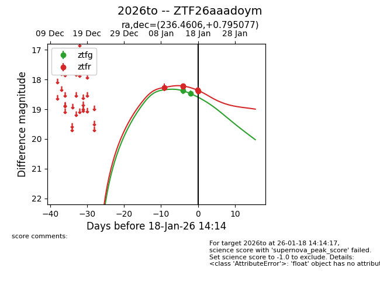
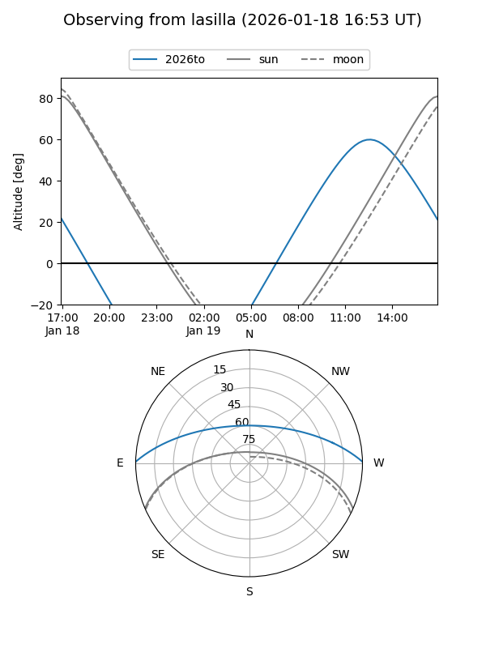
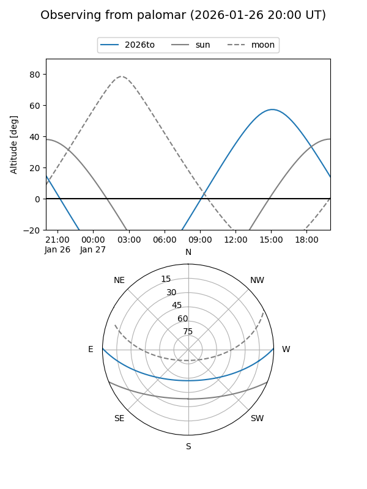
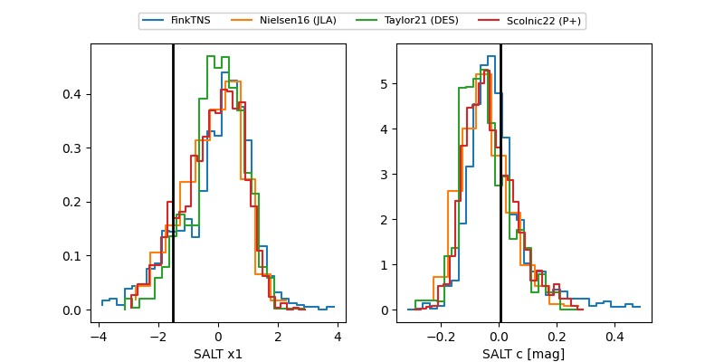

2026to
Target 2026to at 2026-01-19 14:05
Aliases and brokers:
FINK: link
Lasair: link
ALeRCE: link
TNS: link
YSE: link
alt names
ZTF26aaadoym (ztf,fink_ztf)
2026to (tns,yse)
Coordinates:
equatorial (ra, dec) = 236.4606,+0.79508
equatorial (HMS+DMS) = 15:45:50.55,+00:47:42.28
galactic (l, b) = (8.1869,+40.59873)
Flags:
Photometry:
last ztfg=18.47, ztfr=18.39
2 ztfg, 6 ztfr detections
Lightcurve

Visibility


Additional plots
